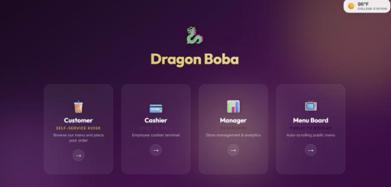

PROJECT OVERVIEW
Multi-Role Restaurant Platform
The project expanded a restaurant point-of-sale system into a browser-based platform with interfaces designed for several different users.
Rather than building a single screen, the system separates functionality into customer, cashier, manager, portal, and menu-board experiences while sharing the same backend and database.
USER EXPERIENCE
Application Interface

The application uses a web-based interface built with React to provide role-specific workflows while communicating with the backend application server.
DIGITAL MENU
Menu Board

A dedicated menu-board view provides a customer-facing display separate from the cashier and management interfaces.
This demonstrates how the same application data can support different presentation layers depending on the intended user.
ARCHITECTURE
Full-Stack Design
The React frontend communicates with an Express backend, which handles application logic and database operations against PostgreSQL.
FEATURES
Application Capabilities
ENGINEERING TAKEAWAYS
Working Across the Stack
The project required thinking beyond an individual webpage or database table. Changes in the frontend had to work correctly with backend routes, database queries, and the workflows of multiple user roles.
It provided experience designing software as an integrated system rather than as isolated components.